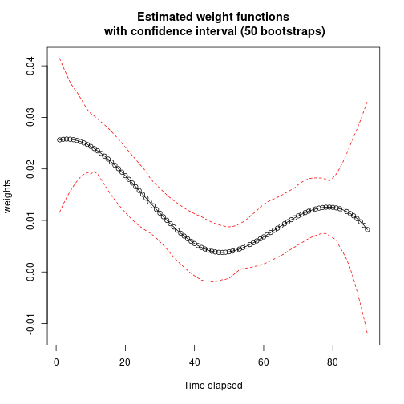

The Weighted Cumulative Exposure (WCE) model1 extends the Cox proportional hazards model to time-varying exposures whose effect on the hazard depends not only on the current exposure level but also on how it has evolved over time. It estimates a weight function that captures how the influence of past exposure on the hazard changes with the time elapsed since it occurred, so that the cumulative effect at any given time is a weighted sum of the exposure history up to that point.
Let’s make an example with drugdata dataset from WCE
package2.
Before load survivalGPU, use your virtual python
environment (see vignette("installation")).
library(reticulate)
use_virtualenv(virtualenv = "survivalGPU") Id Event Start Stop sex age dose
1 1 0 0 1 1 40 0
2 1 0 1 2 1 40 0
3 1 0 2 3 1 40 0
4 1 0 3 4 1 40 0
5 1 0 4 5 1 40 0
6 1 0 5 6 1 40 0Check if CUDA is detected :
use_cuda()[1] FALSEBy default, functions run with GPU if detected. Then we specify the number of bootstrap replicates, and consequently the batchsize argument, according to CUDA drivers detection.
if (use_cuda()) {
n_bootstrap <- 1000
batchsize <- 200
} else {
n_bootstrap <- 50
batchsize <- 10
}To fit a model, use wceGPU(): its arguments follow those
of WCE::WCE() from the ‘WCE’ package.
The number of interior knots of the splines is usually not known in
advance. As in the WCE package, nknots accepts
several candidates (e.g. 1:3): one model is fitted per
candidate, and the one that minimizes the information criterion is
selected (the BIC by default, or the AIC with
aic = TRUE).
wce_gpu <- wceGPU(data = drugdata, nknots = 1:3, cutoff = 90, id = "Id",
event = "Event", start = "Start", stop = "Stop",
expos = "dose", covariates = c("age", "sex"),
constrained = FALSE, aic = FALSE, confint = 0.95,
x = TRUE)wceGPU() fits the model only; with
x = TRUE, it also stores the columns of data
that the model uses. Bootstrap confidence intervals are added afterwards
with bootstrap(), which refits the model on R
patient-level resamples of that stored data (the patients are identified
by the id column), processed batchsize copies
at a time on the GPU. The bootstrap therefore always uses exactly the
data the model was fitted on.
The bootstrap resamples are drawn by PyTorch, not by R, so
set.seed() has no effect on them. To get reproducible
results, set PyTorch’s seed:
wce_gpu_bootstrap <- bootstrap(wce_gpu, R = n_bootstrap, batchsize = batchsize)In the summary, there are estimated coefficients for the covariates of the selected model with his confidence interval, calculated with var-covariance matrix, and information to see the significance of the covariates. It’s also possible to have confidence interval with bootstrap.
summary(wce_gpu_bootstrap)Weighted cumulative exposure (WCE) in a Cox proportional hazards model
Weight function: cubic spline with 1 interior knot(s), unconstrained
Covariates:
coef exp(coef) se(coef) z Pr(>|z|)
age 0.0115718 1.0116390 0.0039769 2.9097 0.003617 **
sex 0.6875935 1.9889234 0.1188602 5.7849 7.256e-09 ***
---
Signif. codes: 0 '***' 0.001 '**' 0.01 '*' 0.05 '.' 0.1 ' ' 1
Bootstrap percentile intervals for the coefficients (50 replicates, level 0.95):
2.5% 97.5%
age 0.003853 0.01827
sex 0.432600 0.93930
Partial log-likelihood: -1891.644, BIC: 3824.924
Number of events: 383
See plot(wce_gpu_bootstrap) for the estimated weight function.With allres = TRUE, the summary shows every candidate
that was tried, with its partial log-likelihood and information
criterion, and the one that was selected (also available in
wce_gpu_bootstrap$best.nknots).
summary(wce_gpu_bootstrap, allres = TRUE)
Candidate models tried:
nknots loglik BIC
1 1 -1891.644 3824.924
2 2 -1891.752 3831.089
3 3 -1891.260 3836.053
Best model: 1 knot(s), by BIC.With several nknots candidates, bootstrap()
selects the number of knots again in every bootstrap replicate:
The bootstrap confidence intervals of the weight function, of the
covariates and of the hazard ratios therefore account for the
uncertainty on the choice of the number of knots, and not only for the
uncertainty on the estimates for a fixed number of knots. The number of
knots selected by each replicate is stored in
bootstrap.best.nknots:
table(wce_gpu_bootstrap$bootstrap.best.nknots)
1
50Since different replicates may select splines with different numbers
of coefficients, the bootstrap spline coefficients
(bootstrap_est, est_CI) are only returned when
a single nknots value is given. With a single value, there
is nothing to select and every replicate uses that number of knots, as
in a standard bootstrap.
The risk function can be plot, and if you added bootstrap, confidence band intervals will be visible.
plot(wce_gpu_bootstrap)
HR() computes the hazard ratio between two exposure
profiles — for example a constantly exposed patient versus an unexposed
one — using the estimated WCE weight function. If
bootstrap() was called on the model, it also reports a
bootstrap confidence interval for that hazard ratio.
# cutoff at 90 in the WCE model
exposed <- rep(1, 90)
unexposed <- rep(0, 90)
HR(wce_gpu_bootstrap, exposed, unexposed) HR CI 2.5% CI 97.5%
[1,] 3.032552 2.255275 4.005504Sylvestre MP, Abrahamowicz M. Flexible modeling of the cumulative effects of time-dependent exposures on the hazard. Stat Med. 2009 Nov 30;28(27):3437-53. doi:10.1002/sim.3701↩︎
Sylvestre M (2025). WCE: Weighted Cumulative Exposure
Models. R package version 1.0.4, doi:10.32614/CRAN.package.WCE. The reference
implementation of the method: wceGPU() follows its
interface, and its results are tested against it.↩︎